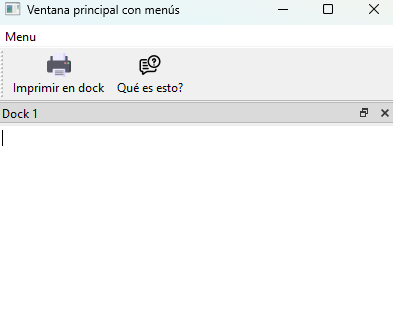
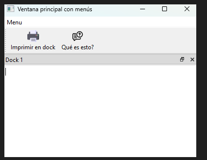

2DAM DI · Tarea
QT6 - 8
Instrucciones
Objetivo: crear una ventana con un panel acoplable y aprender a compartir una misma acción entre el menú, la barra de herramientas y el teclado.
1. Prepara la ventana
- Crea una aplicación con PySide6 y una ventana principal de tipo
QMainWindow. - Añade un componente central y, por separado, un
QDockWidgetque contenga unQTextEdit. - Al iniciar la aplicación, el dock debe estar acoplado en la parte superior de la ventana. Conserva su comportamiento habitual de acoplamiento.
2. Añade «Imprimir en dock»
Crea una única acción con ese nombre y haz que se pueda ejecutar desde el menú Menu, desde un botón de la barra de herramientas y con Ctrl + P.
Cada ejecución añadirá una nueva línea con el texto «Acción pulsada» al editor del dock, conservando las anteriores. Aquí «imprimir» significa escribir en ese panel; no se envía nada a una impresora.
Los tres accesos deben ejecutar el mismo comportamiento una sola vez por pulsación.
3. Incorpora la ayuda «¿Qué es esto?»
Añade el botón a la barra de herramientas. Debe activar el modo de ayuda contextual: al pulsar después sobre «Imprimir en dock», se mostrará la explicación de esa acción.
Asigna este texto de ayuda:
Al ejecutar esta acción, se añadirá el texto «Acción pulsada» en el dock. Se puede lanzar por Menú > Imprimir en dock, con Ctrl + P o haciendo clic en el botón correspondiente de la barra de herramientas.
La ayuda contextual debe explicar la acción sin ejecutarla.
Comprueba el resultado
- El dock aparece arriba al abrir la aplicación.
- Si ejecutas la acción una vez desde cada acceso, aparecen exactamente tres líneas.
- El botón «¿Qué es esto?» muestra la ayuda al seleccionar la acción y permite volver al uso normal de la aplicación.
Prepara la entrega: código fuente y recursos utilizados, con una breve indicación de cómo ejecutar la aplicación.
Referencias visuales del ejercicio
Las capturas orientan la distribución de los controles. Los iconos y la decoración pueden variar.


Consulta: ayuda contextual con QWhatsThis en Riverbank (PyQt6) y Qt for Python (PySide6).
Materiales de la tarea
No hay archivos adjuntos en esta tarea.